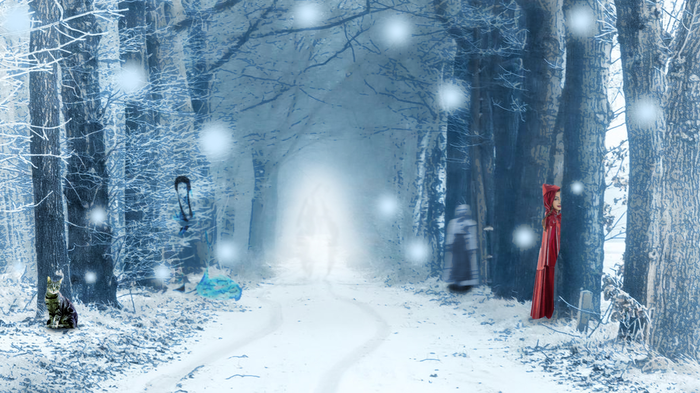
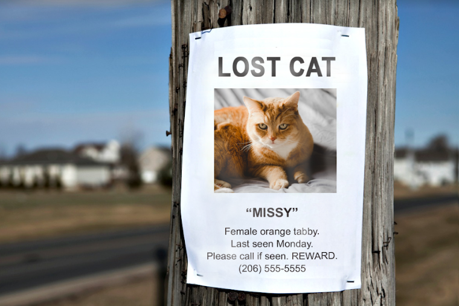
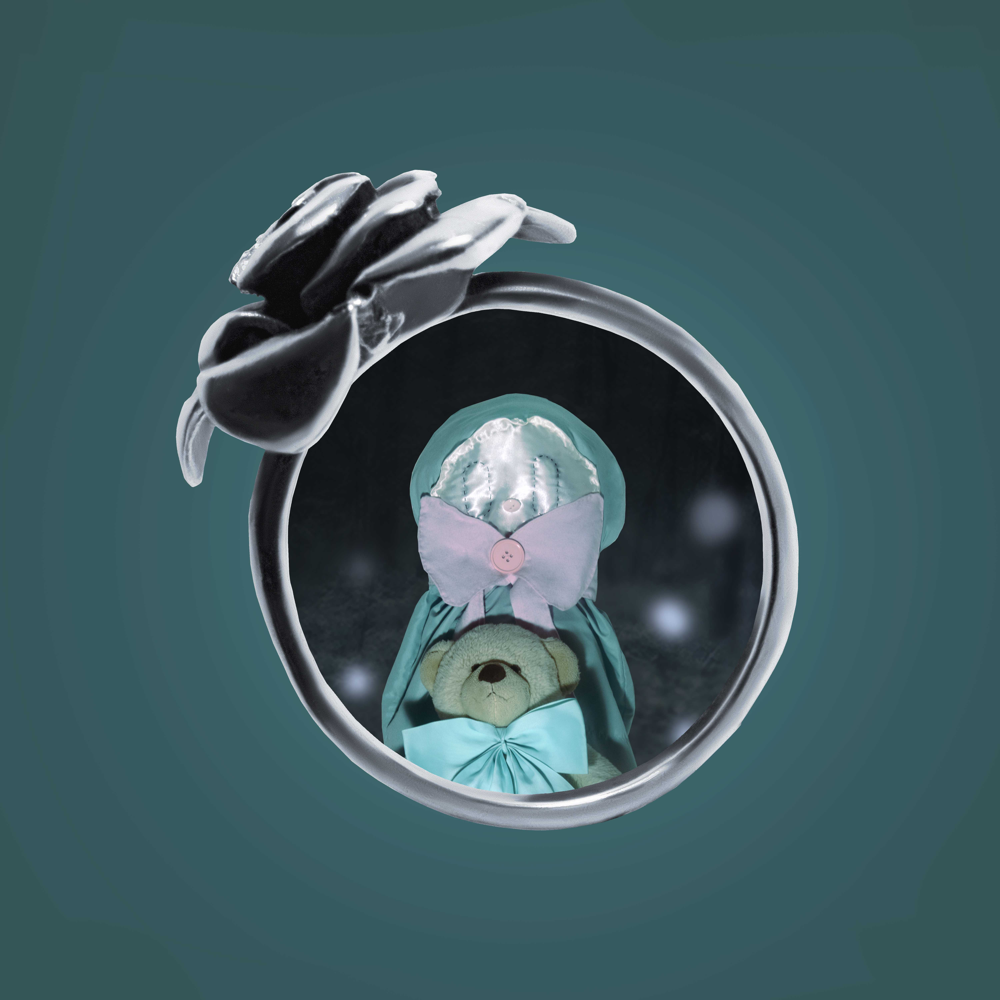

WANDERING LOST
I believe there is an art to being lost. It's beautiful
to me to wander aimlessly sometimes. Becoming lost doesn't
have to be in the real world it can be anywhere. I can get
lost through google searches, video games, going for a walk,
creating a new project, etc. I think I most enjoy the exploration
of it all because becoming lost opens up doors.

CHILDHOOD STORIES

There's something fantastic about getting lost.
In fairytales the main character will often get
hopelessly lost. They usually learn a new lesson.
These stories have the character interact with monsters,
princesses, wizards, etc. When I get lost I feel like
one of these characters I idolized as a child. There's
something whimisical about getting lost. Now I wander around
craft stores, park trails, neighborhood streets, and anywhere
that interests me.
HOW I BECOME LOST

What leads to me becoming lost? What makes me
want to wander? It often happens when I need to
be alone. When I can't keep my head straight. My thoughts
need to be cleared, so I'll find something. Maybe it's a
place, or a book, an idea, or a website. I go to it,
lose myself to feel free. It makes me feel like
there's nothing to control me. Soon I'm lost.
PLACES TO WANDER
WHY I WANDER
There's freedom in isolation. Anywhere I become lost
is usually quiet. The emptiness brings safety and solice.
I don't feel lonely when this happens. I feel myself
changing in the environment, and the fears melt away.
Here I'm alone, but not sad. There can be sadness,
but it's followed with hope and reassurance. I never run
out of ways to wander aimlessly. The safety I find
in being lost is too wonderful.

{kind=link}
{kind=link}
{kind=link}